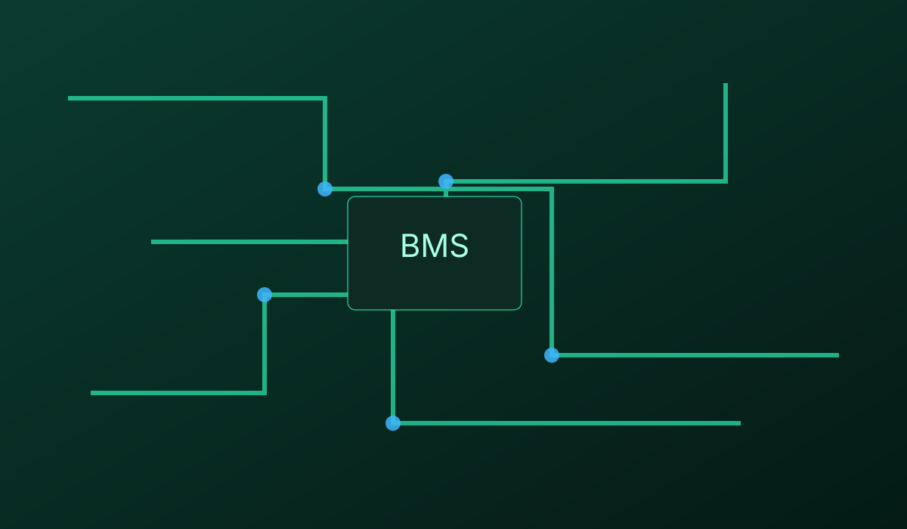
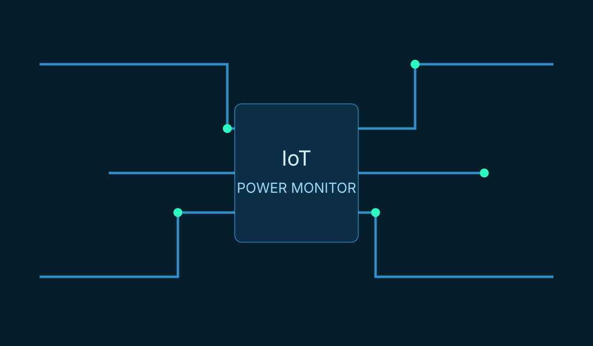
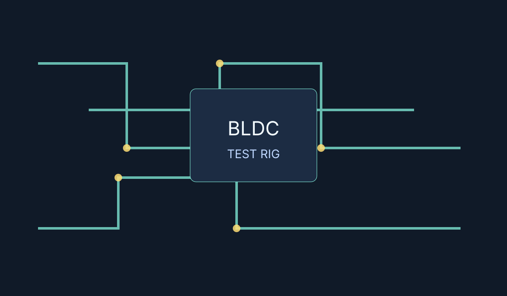

Schneider Quantum → M580 Upgrade
Supported a large-scale PLC migration across multiple site visits, hardware testing, and conversion shutdowns.
Schneider PLC · Site Commissioning · Hardware Testing
Electrical Engineer based in Tokyo with experience in PLC/SCADA upgrades, industrial communications, and hardware troubleshooting.
Proven background in site commissioning, automation upgrades (Schneider Quantum → M580), and cross-border manufacturing coordination. Strong analytical and fault-finding skills with exposure to IT and AI-supported workflow optimisation.
Operate in a fast-paced, startup-style environment delivering hardware, IT, and AI-driven solutions. Lead coordination with Chinese manufacturers to develop electronic devices and accessories, represent the company at industry expos to evaluate partners, and perform hands-on hardware fault analysis, including custom resistive testing for over-current issues. Conduct targeted technical research to support product development and streamline internal workflows.
Electrical Engineer specialising in PLC and SCADA systems, contributing to major industrial automation and upgrade projects. Played a key role in a large-scale Schneider Quantum to M580 PLC migration, conducting solo site visits for hardware testing and supporting team-based shutdowns for system cutovers. Worked within a team to deliver SCADA remediation and standardisation using SQL, and supported site installation and commissioning activities. Produced client-facing technical documentation and proposals while adhering to strict HSE requirements, with hands-on experience in industrial protocols including Modbus and DNP3.

Supported a large-scale PLC migration across multiple site visits, hardware testing, and conversion shutdowns.
Schneider PLC · Site Commissioning · Hardware Testing

Delivered SCADA remediation and standardisation work with SQL integration for consistent plant-level operations.
SCADA · SQL · Industrial Communications

Designed RF PCB concepts, built Arduino-based robotics, and created custom resistive test setups for fault diagnosis.
PCB Design · Arduino · Fault Analysis
Bachelor of Engineering (BE), Electrical and Electronics Engineering
Available for electrical engineering opportunities in automation, controls, and industrial systems.
Jack.wade@outlook.com.auMobile (AU): +61 411 416 698
Mobile (JP): +81 70 3150 7614
LinkedIn: jack-wade-ee